トロント市内で鮭の遡上が見られる場所
１０月下旬の日曜日、鮭の遡上を見にいってみた。
地下鉄Old Mill駅を出たら右（北）へ進むとすぐにOld Mill Rdにでるので、それを右に曲がる。まっすぐすすんでOld Mill Torontoというとても素敵な外観のホテルの前を通りすぎ、Humber Riverという川にかかる橋を渡る。橋を渡りきったところで左（北）に進む。
川沿いは公園になっていて、舗装されたトレイルもあり、よく整備されていて気持ちいい。トイレもあったが、シーズンオフのため鍵がかかっていた。シーズンオフにはちょっと早くないだろうか。
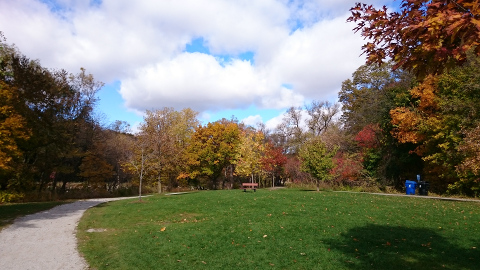
そして、川沿いを北に歩いていくとすぐに、↓のような、川が段差になっているところが見えてくる。
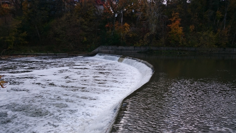
このあたりに人々が立ち止まっていて、おじさんが、オーとか、かけ声をだしていたので、きっとここだとおもい、滝のように水が落ちているところをじっとみていると、なにやら黒いものが跳ねた？
↓中央部、段差が少し緩くなっているところ、に黒い点がある。
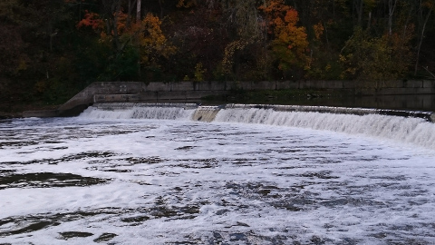
さらに注意深くみていると、跳ねた！
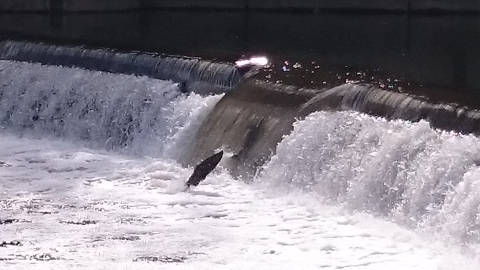
跳ねてる！！一瞬のことなんだけど、なんともダイナミックなジャンプが！！！
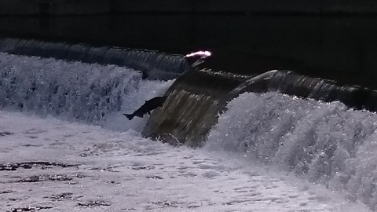
１メートル以上はある高低差に何度も何度も果敢に挑戦する姿には感動する。Ｊ次郎も大興奮。いつのまにか、さっきのおじさんみたいに、あ、とか、あともう少し、とか、あーあ、とか自分も声をだしているのに気づいた。ま、日本語だからいいか、とおもっていたら、気づいたら後ろに日本人がいて、ちょっと恥ずかしかった。
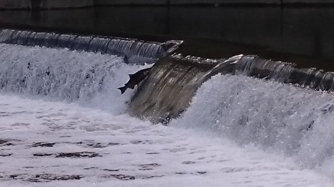
穏やかな秋の日差しを浴びていつの間にか時が過ぎていった。見ていて飽きない。ずーとみていたい気分だった。
↓小さな釣り人。川には釣りをする人々がちらほら見受けられた。
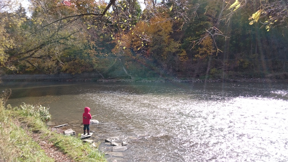
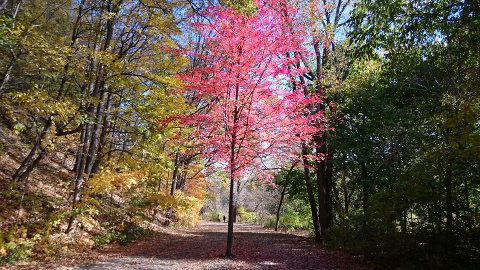
川沿いのトレイルはどこまでもずーっと続いていて、しばらく散歩を楽しんだ後は、地下鉄とバスを乗り継いでダイアナズシーフードへ。
陳列されているオイスターの前でどれにしようか迷っていると、皆が買っていくものがKusshiだったのでそれをチョイス。
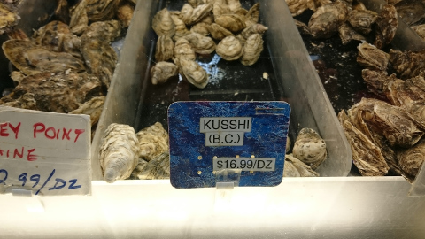
さらにもう一種類買ってみることに。店のひとが、Ｂ．Ｃ（ブリテッィシュコロンビア）産のはクリーミーで、Ｐ．Ｅ．Ｉ（プリンスエドワードアイランド）産は塩味が強いと説明しているのを聞き、それではと、クリーミーなＢ．Ｃ産で、やはり他の客が選んでいったFanny Bayをチョイス。それぞれ６個ずつ買った。
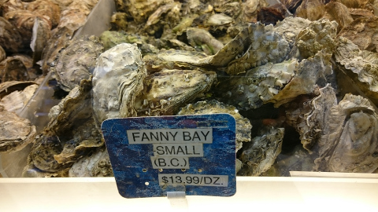
Kusshiの読み方がわからなかったが、家に帰って調べてみると、日本語の屈指に由来しているらしい。それほどおいしいということみたい。
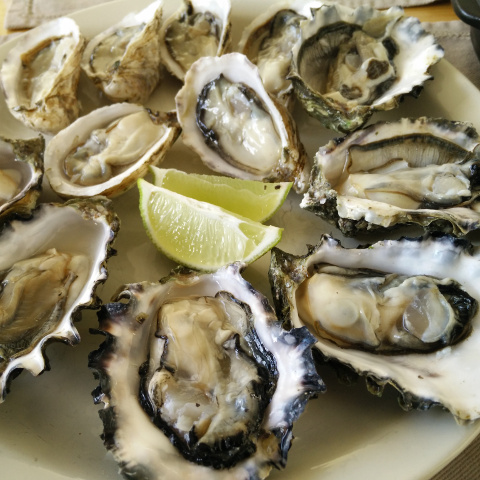
さて、味のほうはというと、私もＪ次郎も、クッシより、ファニーベイのほうがまろやかでうま味があって、好みだった。